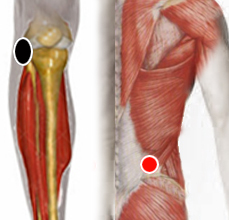

Steptococcus Agalactiae
Pares
ligamento ext. de rodilla - cuadrado lumbar
ligamento int. rodilla - mesenterio
labio - labio

Generalidades:
También conocida como Estreptecoco del grupo B o GBS (por sus siglas en Inglés). La bacteria con forma de coco forma parte habitual de la flora del intestino delgado. En los estudios aparece al menos en el 30% de los humanos sin resultar patógena; sin embargo, puede causar complicaciones en bebés y en pacientes inmunodeprimidos, en cuyo caso puede ser muy peligrosa.
Un síntoma reportado por varios biomagnetistas es pesadez en las piernas.
En mujeres gestantes puede pasar inadvertida, o bien, puede causar graves complicaciones durante el parto o al neonato.
Transmisión:
La bacteria habita el intestino delgado, ocacionalmente puede llegar al intestino grueso y de ahí, por su cercanía pasar a la vagina. Es común la transmisión sexual (checar a la pareja).
Esta bacteria también se encuentra en varias especies de animales, por lo que no se descarta que se pueda adquirir por ese medio. (checar con bioenergética)